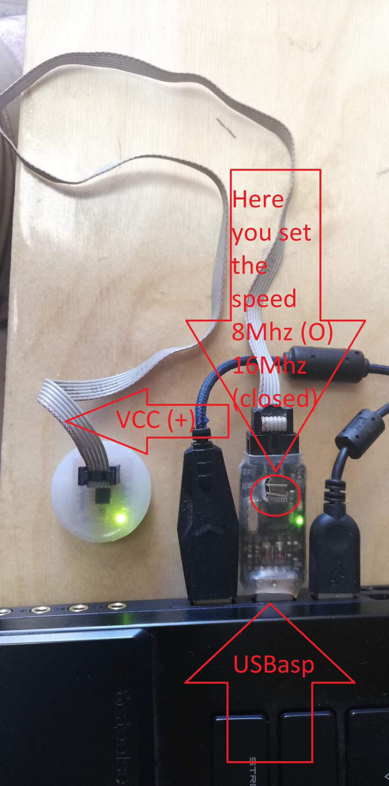
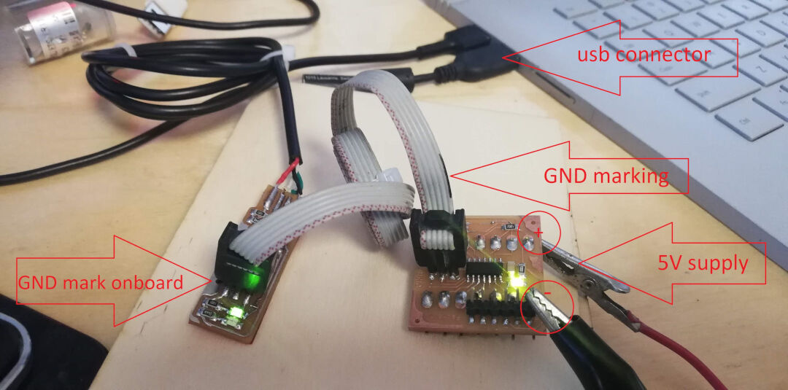
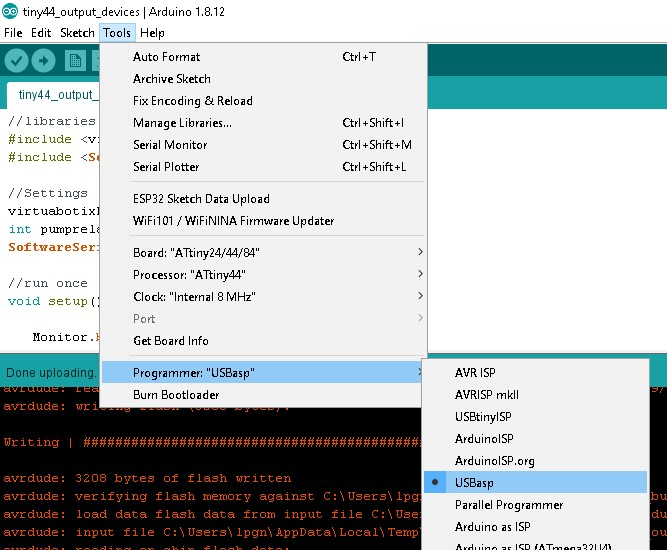

Output Devices
Group assignment
- Measure the power consumption of an output device
- Document your work (in a group or individually)
Individual assignment
- Add an output device to a microcontroller board you've designed and program it to do something
Learning outcomes:
- Demonstrate workflows used in controlling an output device(s) with MCU board you have designed
Have you:
- Linked to the group assignment page
- Documented how you determined power consumption of an output device with your group
- Documented what you learned from interfacing output device(s) to microcontroller and controlling the device(s)
- Described your design and fabrication process or linked to previous examples.
- Explained the programming process/es you used
- Outlined problems and how you fixed them
- Included original design files and code
- Included a 'hero shot/video' of your board
Tools used
- Soldering station
- Small CNC
Software Used
- Autodesk Eagle
- Arduino IDE
Files
Group Assignment
Go to group assignment page
Introduction
I started this assignment with the intention to improve the farm irrigation automation. We already have an ESP8266 controlling a pump and 4 relays and monitoring the pump's current draw. The problem is that the ESP8266 on its program is not responsive and makes setting up the times time consuming. This is due to a limitation on the quantity of ADC pins. It was explained to me by the Shakeel one volunteer that we had in the farm that the ESP8266 uses the only ADC pin to monitor its wifi connection so he created a program that reduces the samples taken by the amp meter in other to share the pin with the wifi. Well this works but makes the wifi connection unreliable, so my challenge will be trying to understand the ESP32 so I can port his program and complete the assignment at the same time. Lets try!
The other thing I would like to point is that I will focus more on the code as I already demonstrated the PCB manufacturing process In the other week and also as a major change in the way I complete the assignment is that I will document as I learn and do things so the assignment will feel more like a log than a tutorial.
Objectives
My initial objective will be to understand more the ESP32 and then as a second objective have it replacing the current irrigation control a third objective will be applying all this knowledge to my incubator final project.
Pinout

Code plan
- check time
- turn on pump if in time range
- read amp meter looking for under and over current if detected it will stop pump operation
Code research
I started by checking the website techtutorialsx.com
As it is explained by the page the code to turn on a relay is pretty similar to other arduino codes I have seen so let's see
I will be using int pumprelayPin1 = 20; to define the variable pumprelayPin1 as the pin 20 and will store the value as an integer.
pinMode(pumprelayPin1, OUTPUT); sets the pin mode for pumprelayPin1 as an output pin meaning it will be active as opposed to input that passively monitors for a signal.
digitalWrite(pumprelayPin1, LOW); will set the pin to an off state with the LOW
delay(4000); will tell the program to wait 4 seconds or 4000 milliseconds
Thats how my code looks so far:
int pumprelayPin1 = 20;
void setup() {
pinMode(pumprelayPin1, OUTPUT);
digitalWrite(pumprelayPin1, LOW);
}
void loop() {
digitalWrite(pumprelayPin1, HIGH);
delay(4000);
digitalWrite(pumprelayPin1, LOW);
delay(4000);
}
This code so far will start and then turn on and off the relay with 4 seconds between each operation.
Now for the second part I want to get time from a real time clock in oder to activate the pump on certain times. So first I need to include the RTC clock library. I am using a DS1302 RTC clock chip so this library should do the trick with this code #include <virtuabotixRTC.h> according to library documentation here.
Second we need to declare the pins of the rtc clock with this code virtuabotixRTC myRTC(5, 18, 19); and RtcDS1302<ThreeWire> Rtc(myWire); this means when the ESP32 communicates with the real time clock chip it will be using the pins 5 to CLK 18 to DAT and 19 to RST.
Now in other to show the time from the real time clock I include this either in the void setup() {} area or in the void loop() {} area. The first will print it once the second will print it until I have it running. Of course we need to add a delay of at least of a minute with delay(60000); the unit in the variable is milliseconds so 1000 means 1 second and 60000 means 60 seconds.
Serial.begin(115200);
myRTC.updateTime();
Serial.println();
If the RTC was never used before you can set the time running once the following code: myRTC.setDS1302Time(00, 28, 16, 6, 23, 5, 2020); being the first characters seconds then minutes, hours (24h mode), day of the week, day of the month, month, year)
This is how the code is looking so far:
#include <virtuabotixRTC.h>
virtuabotixRTC myRTC(5, 18, 19);// (CLK,DAT,RST)
int pumprelayPin1 = 22;
void setup() {
Serial.begin(115200);
pinMode(pumprelayPin1, OUTPUT);
}
void loop() {
myRTC.updateTime();
Serial.print(myRTC.hours);
Serial.print(":");
Serial.print(myRTC.minutes);
delay(58000);
digitalWrite(pumprelayPin1, HIGH);
delay(1000);
digitalWrite(pumprelayPin1, LOW);
delay(1000);
}
So far there is no logic test the code shows the time every minute and turns on and off the relay. So in other to add a logic test we need the if statement. It will check if something is true and then execute whatever next in the program.
Extracted from the Arduino references:
if (condition) {
//statement(s)
}So In other to check the time and turn on my relay I will try something like this: if ((myRTC.hours) == 15 || (myRTC.minutes) == 0) {digitalWrite(pumprelayPin1, HIGH)}
To turn of the code will be like this: if ((myRTC.hours) >= 15 || (myRTC.minutes) >= 1) {digitalWrite(pumprelayPin1, LOW)}
My code now looks like this:
//libraries
#include <virtuabotixRTC.h>
//Settings
virtuabotixRTC myRTC(5, 18, 19);// (CLK,DAT,RST)
int pumprelayPin1 = 22;
//run once
void setup() {
Serial.begin(115200);
myRTC.setDS1302Time(50, 15, 16, 6, 24, 5, 2020); // sets seconds, minutes, hours (24h mode), day of the week, day, month, year) comment after first compile
pinMode(pumprelayPin1, OUTPUT);
}
//run in loop
void loop() {
myRTC.updateTime();//updates time
Serial.print("Current Time: ");
Serial.print(myRTC.hours);
Serial.print(":");
Serial.print(myRTC.minutes);
Serial.print(":");
Serial.print(myRTC.seconds);
Serial.println();
delay (1000);
//condition (logic test)
if ((myRTC.minutes) == 16) digitalWrite(pumprelayPin1, HIGH);
if ((myRTC.minutes) >= 17) digitalWrite(pumprelayPin1, LOW);
}
here is how it runs on the ESP32 development board
Board design
For this board I will need at least 4 digital pins and one analog pin if I want to measure the current of the pump in the future. So I believe the ATtiny44 will be suitable enough. I will leave the ESP32 for the Network week ;-). Also my esp32 smd component haven't arrived yet, I believe it is because of COVID19 break of supply chains. Thats why I experimented with the ESP32 development board I had in hand.
Pinout of ATtiny44

With that in hand I will modify the tiny45 I did in the input devices week by adding another header for a more comfortable programing and serial monitoring as well as all the pins to have this board as modular as possible.
I wont be covering the eagle design or milling in detail as I already did in the Input devices week. Instead I will only cover the comands I might not have used like replace and then a few hero shots and tests.
So lets start with the redesign!
- I start by opening the old eagle file here.
- I tried the command replace but it did not work to replace the Attiny45 for the attiny44 they are too different I guess. So I will have to add the new component remap the connections with net than name and then reroute everything on the board. Lets see.
This is the Board Schematics and Layout
Board Layout
Next I run the ULP pcb-gcode just like explained on Output Devices
G-code isolation visualization
Next I use the program Autoleveller also explained on Output Devices and I obtain a G-code that is adjusted to the imperfections of the blank pcb.
Board Layout
Milling the PCB
The milled pcb
blank pcb
The Attiny44 board with the soldered components looks like this.
Board Layout
Now that I have the pcb done I changed the code to run on the attiny44. One remarcable thing is that the attiny44 needs a software serial library that I invoked with this code #include <SoftwareSerial.h> two more things for the serial to work: the library needs to know the pins TX and RX are going to be SoftwareSerial Monitor(1, 0); in void setup{} I included the serial monitor initialization with Monitor.begin(115200); intead of the usual Serial.begin(115200); and finally in void loop {} every time I wanted serial to print something I needed to use the code Monitor.print(); instead of the usual Serial print ();
In the end my test code looks like this:
//libraries
#include <virtuabotixRTC.h>
#include <SoftwareSerial.h>
//Settings
virtuabotixRTC myRTC(3, 8, 7);// (CLK,DAT,RST)
int pumprelayPin1 = 2;
SoftwareSerial Monitor(1, 0);
//run once
void setup() {
Monitor.begin(115200);
myRTC.setDS1302Time(50, 15, 16, 6, 24, 5, 2020); // sets seconds, minutes, hours (24h mode), day of the week, day, month, year) comment after first compile
pinMode(pumprelayPin1, OUTPUT);
}
//run in loop
void loop() {
myRTC.updateTime();//updates time
Monitor.print("Current Time: ");
Monitor.print(myRTC.hours);
Monitor.print(":");
Monitor.print(myRTC.minutes);
Monitor.print(":");
Monitor.print(myRTC.seconds);
Monitor.println();
delay (1000);
//condition (logic test)
if ((myRTC.minutes) == 16) digitalWrite(pumprelayPin1, HIGH);
if ((myRTC.minutes) >= 17) digitalWrite(pumprelayPin1, LOW);
}
Now lets program! For Another method without the Arduino IDE check Embedded Programing
USBasp
Programming an attiny44 board with arduino using a FabTinyISP or USBtinyISP that I made.
FabISP
Programming an attiny44 board with arduino using a FabTinyISP or USBtinyISP that I made was fine. there is only the inconvenience of having to power the target board.
Start by oppening the Arduino IDE, than in tools chose the board, in my case ATtiny24/44/84, Next in processor I chose Attiny44.

Next chose the clock, as I m not using a external crystal I chose "Internal 8MHz.

Next go to Programmer:"USBasp or USBtiny for the Fabisp.

In the video bellow I show the the process of programming with the FabISP.
For a full resolution video check Youtube
In this video I show the process of programming with the USBasp.
For a full resolution video check Youtube
I can show the Attiny44 controling a relay to turn on a compressor on a specific time set in the program.
For a full resolution video check Youtube
Hero Shot
Board Layout
Foot notes
Check usage of millis in the future